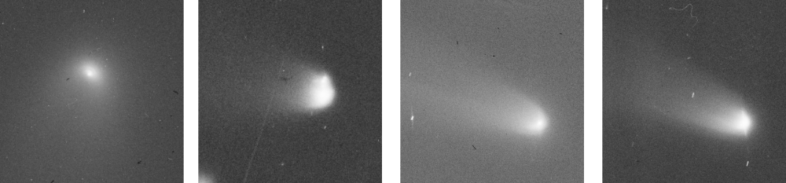

上海天文台 · 天文底片数字化实验室Shanghai Astronomical Observatory · Plate Digitization LAB
星鉴 · Plate-YOLOPlate-YOLO · 星鉴面向历史天文底片配准的端到端目标检测框架An End-to-End Object Detection Framework for Robust Astrometric Registration of Historical Plates
中国科学院上海天文台Shanghai Astronomical Observatory, Chinese Academy of Sciences
中国科学院大学University of Chinese Academy of Sciences
相关研究论文已被 The Astronomical Journal（AJ）接收。The research paper has been accepted by The Astronomical Journal (AJ).
研究概述Overview
历史天文底片记录了跨越百年的天文观测数据，是研究恒星自行及天体长期演化的重要资料。然而，受限于底片老化、背景复杂、星像微小及划痕等因素，传统源提取方法难以准确识别恒星，导致部分底片无法完成天体测量定标。 Historical astronomical plates preserve over a century of observations, providing valuable records for studying stellar proper motions and long-term celestial evolution. However, plate aging, complex backgrounds, tiny stellar images, and scratches make reliable stellar source extraction challenging, often preventing successful astrometric calibration with conventional methods.

针对上述问题，我们提出了 Plate-YOLO（星鉴），一种基于改进 YOLOv5 的历史天文底片恒星检测框架。通过结合 Gaia DR3 参考星表进行跨档案微调，实现复杂底片中恒星与伪源的有效区分，并利用简单的仪器亮度估计与排序，为 Astrometry.net 提供更加纯净、可靠的恒星星表，从而提高自动天体测量定标的成功率。 To address these challenges, we introduce Plate-YOLO (星鉴), an enhanced YOLOv5-based framework for stellar detection in historical astronomical plates. Through cross-archive fine-tuning using Gaia DR3 reference catalogs, the framework effectively distinguishes stellar sources from artifacts in complex plate images. Combined with approximate instrumental brightness estimation and ranking, Plate-YOLO provides Astrometry.net with cleaner and more reliable stellar catalogs, thereby improving the success rate of automated astrometric calibration.
科学背景：从数字化到科学数据化Motivation: From Scanned Images to Scientific Data
历史底片是研究恒星自行、长期变源及其他时域天文现象的重要观测资料。高精度扫描能够保存底片的图像信息，但要确定天体的真实天球坐标，还必须准确识别恒星并完成天体测量定标。Historical plates are valuable for studying stellar proper motions, long-term variable sources, and other time-domain phenomena. High-precision scanning preserves their image information; determining celestial coordinates additionally requires reliable stellar identification and astrometric calibration.
传统流程通常先使用 SExtractor 提取候选天体源，再通过分类排除伪源，最后与参考星表匹配。划痕、霉斑、感光乳胶脱落，以及星像畸变和拖线，可能造成误检或漏检，降低匹配可靠性，使定标需要反复调整，甚至无法获得可靠解。Conventional workflows typically extract candidate sources with SExtractor, classify them to reject spurious detections, and then match them to a reference catalog. Scratches, mold, emulsion loss, distorted stellar images, and trails can cause false detections or missed stars, undermining catalog matching and requiring repeated adjustments—or preventing a reliable solution altogether.

上海天文台天文底片数字化实验室拥有 5 台高精度扫描仪，其中 4 台亚微米级测量设备由团队自主研制。实验室已完成我国 29,314 张历史底片的数字化，其中 15,696 张底片的数字化图像及天体测量成果已向全球开放共享。The laboratory operates five high-precision plate scanners, including four submicrometer-level measuring systems developed in-house. It has digitized 29,314 Chinese historical plates; digitized images and astrometric results for 15,696 plates have been made openly available worldwide.
近年来，实验室与乌兹别克斯坦、意大利、日本、智利等国天文机构合作，累计完成约 5 万张国际历史天文底片的数字化，为天文观测遗产的保护与科学利用提供支撑。Through collaborations with astronomical institutions in Uzbekistan, Italy, Japan, Chile, and other countries, the laboratory has also digitized approximately 50,000 international historical plates, supporting the preservation and scientific use of astronomical heritage.
方法：恒星检测与跨档案适配 Method: Stellar Detection and Cross-Archive Adaptation
Plate-YOLO 模型设计 Plate-YOLO Architecture
Plate-YOLO 基于 YOLOv5 构建，针对历史天文底片中恒星目标微小、背景复杂及图像退化等问题，引入 P2 高分辨率检测头增强小目标检测能力，利用 SPD-Conv 减少下采样过程中的特征损失，通过 SimAM 注意力机制优化特征提取，并采用 NWD 损失函数改善微小目标的边界框回归精度，实现恒星与非恒星目标的联合检测与分类。 Built upon YOLOv5, Plate-YOLO addresses tiny stellar sources, complex backgrounds, and image degradation in historical astronomical plates. It incorporates a high-resolution P2 detection head for small-object detection, SPD-Conv to preserve spatial information during downsampling, SimAM attention for enhanced feature extraction, and NWD loss for more robust bounding-box regression, enabling joint detection and classification of stellar and non-stellar sources.

跨档案适配与天体测量定标 Cross-Archive Adaptation and Astrometric Calibration
考虑到不同天文台、望远镜及感光材料造成的底片成像差异，我们提出了基于 Gaia DR3 参考星表的跨档案微调策略。首先利用基础模型对新档案进行恒星检测与初步定标，再将成功定标底片中的检测结果与 Gaia 恒星位置交叉匹配，自动生成训练样本，用于模型微调，从而适应新档案的成像特征，提高此前未定标底片的恢复能力。 To address imaging differences across observatories, telescopes, and photographic materials, we introduce a Gaia DR3-guided cross-archive fine-tuning strategy. The base model first detects stellar sources and attempts astrometric calibration on a new archive. Detections from successfully solved plates are then cross-matched with Gaia stellar positions to automatically generate training samples for fine-tuning, allowing the model to adapt to the new archive and recover additional unsolved plates.
对于检测得到的恒星，进一步通过原始 FITS 图像估计仪器亮度并进行排序，将筛选后的恒星坐标输入 Astrometry.net，完成自动天体测量定标。 For the detected stellar sources, approximate instrumental brightness is estimated from the original FITS images and used for source ranking. The selected stellar coordinates are then passed to Astrometry.net for automated astrometric calibration.
研究结果：历史底片天体测量定标 Results: Astrometric Recovery of Historical Plates
我们将 Plate-YOLO 应用于乌兹别克斯坦乌鲁伯天文研究所（UBAI）的历史底片档案， 对其中 150 张传统方法无法成功定标的底片进行了测试。 基础模型首先恢复了 40 张，利用这些底片自动构建训练样本并进行跨档案微调后， 又成功恢复 106 张。在排除 4 张特殊彗星跟踪观测底片后， 146 张常规观测底片全部成功定标，成功率达到 100%。 We applied Plate-YOLO to the historical photographic plate archive of the Ulugh Beg Astronomical Institute (UBAI), Uzbekistan, evaluating 150 plates that could not be solved using conventional methods. The base model initially recovered 40 plates. After cross-archive fine-tuning using automatically generated training samples, an additional 106 plates were successfully recovered. Excluding four special comet-tracking observations, all 146 plates from conventional observing modes were successfully solved, achieving a 100% recovery rate within this subset.
特殊观测底片 Special Observations
其余 4 张未能定标的底片均采用特殊的彗星跟踪观测模式。 由于望远镜跟踪彗星运动，背景恒星呈现明显拖线， 导致可用于星图匹配的点状恒星数量不足， 因而无法获得可靠的天体测量解。 这类观测不同于 Plate-YOLO 主要针对的常规恒星观测底片。 The four remaining unsolved plates were acquired using a special comet-tracking observing mode. As the telescope tracked the comet, background stars appeared significantly trailed, leaving insufficient compact stellar sources for reliable astrometric matching. These observations differ from the conventional stellar observations primarily addressed by Plate-YOLO.

科学意义与未来工作Scientific Impact and Future Work
“星鉴”连接了高精度底片数字化扫描与自动化科学数据处理，为历史观测遗产从图像保存走向可用于科学研究的天体测量数据提供了新的技术途径。其研发进一步完善了上海天文台天文底片数字化实验室的技术体系。Plate-YOLO connects high-precision plate digitization with automated scientific data processing, providing a new route from preserved images to astrometric data usable in research. It extends the laboratory’s capabilities from scanning hardware to scientific data production.
未来，研究团队将推动模型在不同国家、不同望远镜及不同年代的底片档案中应用，通过针对性微调提高批量处理效率和定标成功率，为恒星自行、长期变源及其他时域天文研究拓展百年观测时间基线。Future work will extend the model to archives from different countries, telescopes, and observing eras. Targeted fine-tuning is expected to improve large-scale processing efficiency and astrometric success rates, extending the observational baseline for stellar proper motions, long-term variability, and other time-domain studies across a century.
成果共享与研究支持 Resources and Acknowledgments
为促进历史天文底片的数字化研究与科学利用， 我们通过 ScienceDB 和 arXiv 共享相关研究成果， 包括论文、实验数据及模型资源，以支持后续研究与方法复现。 To promote the scientific use of historical astronomical plates, we share our research outputs through ScienceDB and arXiv, including publications, experimental data, and model resources, supporting further research and reproducibility.
引用本研究 Cite This Work
如果本研究对您的工作有所帮助，欢迎引用我们的论文。 If you find this work useful, please consider citing our paper.
@misc{xu2026plateyoloendtoendobjectdetection,
title={Plate-YOLO: An End-to-End Object Detection Framework for Robust Astrometric Registration of Historical Plates},
author={Quanfeng Xu and Zhengjun Shang and Shiyin Shen and Yong Yu and Mingyang Ma and Zhenghong Tang and Meiting Yang and Jing Yang and Jianhai Zhao},
year={2026},
eprint={2610.25677},
archivePrefix={arXiv},
primaryClass={astro-ph.IM},
url={https://arxiv.org/abs/2610.25677},
}
研究团队与项目支持 Research Team and Acknowledgments
本研究由中国科学院上海天文台徐权峰等人完成， 沈世银和于涌为通讯作者。 研究获得国家重点研发计划、国家自然科学基金及 中国科学院国际合作项目等支持。 This research was conducted by Quanfeng Xu and collaborators at the Shanghai Astronomical Observatory, Chinese Academy of Sciences, with Shiyin Shen and Yong Yu as corresponding authors. The work was supported by the National Key R&D Program of China, the National Natural Science Foundation of China, and international cooperation programs of the Chinese Academy of Sciences.